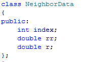

NeighborData

This class is returned by the ParticleGroup::FindNeighbors function and contains information about a neighboring particle.
int index
The particle index of this neighbor in the particle subgroup.
double rr
The squared euclidean distance of the neighbor particle to the sampled position.
double r
The euclidean distance of the neighbor particle to the sampled position.